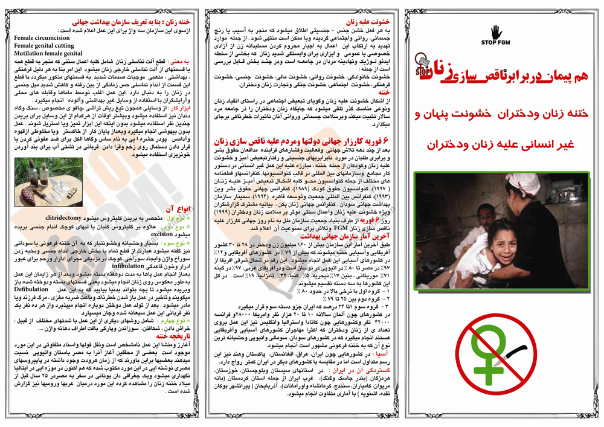
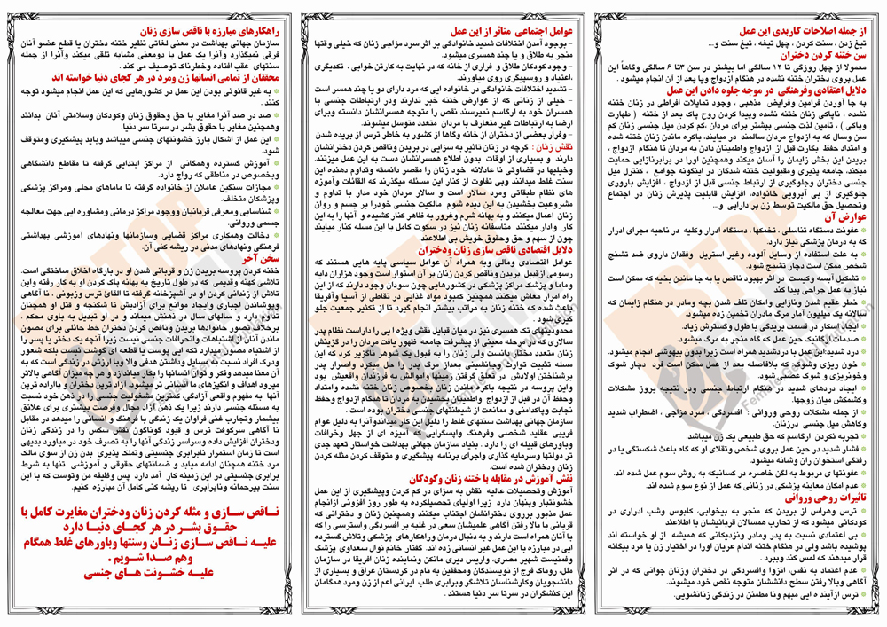

|
|
روز جهانی مبارزه علیه ناقص سازی زنان (ششم فوریه )
دو شنبه18 بهمن 1389
تغییر برای برابری - به مناسبت ششم فوریه روز جهانی کارزار علیه ناقص سازی زنان (ششم فوریه )
بروشوزی از سوی فعالان حقوق زن تهیه شده است . با چاپ و پخش این حرکت علیه ناقص سازی زنان تلاش کنید .

